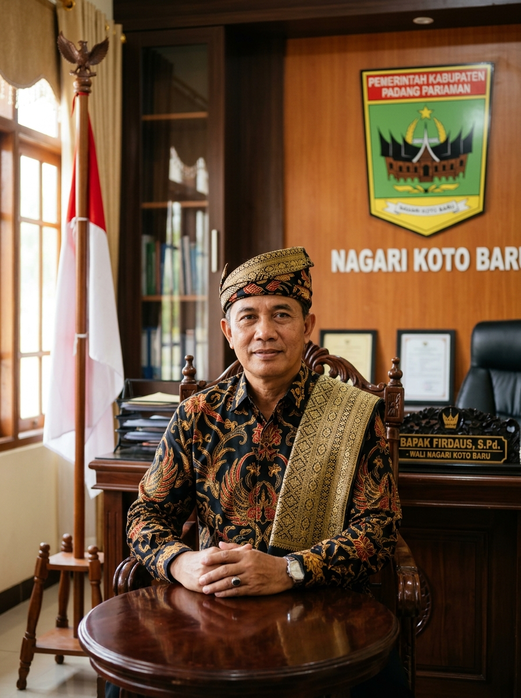

Kecamatan Sungai Pagu, Kabupaten Solok Selatan
Alam Basandi Syarak, Syarak Basandi Kitabullah
Mengenal lebih dalam tentang nagari kami yang kaya budaya dan sumber daya alam

Periode 2026
"Bersama membangun nagari yang bersih, menyatu dengan masyarakat, adat dan lembaga Nagari."Hubungi via WhatsApp
Nagari Pasir Talang terletak di Kecamatan Sungai Pagu, Kabupaten Solok Selatan, Provinsi Sumatera Barat, pada ketinggian 400–800 mdpl dengan luas wilayah ± 5.349 Km². Seluruh warganya (4.109 jiwa) beragama Islam dan menjunjung tinggi adat Minangkabau.
“Menjadikan Nagari Pasir Talang yang bersih, menyatu dengan masyarakat, adat dan lembaga Nagari.”
Kami hadir untuk melayani masyarakat Nagari Pasir Talang dengan sepenuh hati
Pengurusan surat keterangan domisili, keterangan tidak mampu, keterangan usaha, dan berbagai surat keterangan lainnya.
Pengurusan dokumen kependudukan dan pengantar pembuatan KTP, KK, dan Akta Catatan Sipil.
Pelayanan terkait pengurusan tanah ulayat, surat keterangan tanah, dan administrasi aset nagari.
Informasi dan pendaftaran program bantuan sosial dari pemerintah untuk masyarakat yang membutuhkan.
Dukungan untuk BUMNag dan pelaku usaha lokal dalam mengembangkan potensi ekonomi nagari.
Akses informasi tentang anggaran nagari, rencana pembangunan, dan laporan kegiatan secara transparan.
Kantor Nagari Pasir Talang buka Senin–Jumat, pukul 08.00–16.00 WIB
Informasi kependudukan dan pembangunan nagari secara transparan
Perangkat pemerintahan dan lembaga yang menjalankan roda kehidupan Nagari Pasir Talang
Data pengurus KAN Nagari Pasir Talang sedang dalam proses pengumpulan dan akan segera ditampilkan.
💬 Hubungi via WhatsAppPesona alam, warisan budaya, dan cagar sejarah Nagari Pasir Talang yang menunggu untuk Anda jelajahi
Masjid bersejarah yang menjadi ikon religi dan cagar budaya Nagari Pasir Talang. Dinamai “Kurang Aso 60” karena memiliki makna historis yang dalam bagi masyarakat setempat.
Makam ulama besar penyebar Islam di kawasan Sungai Pagu. Menjadi tempat ziarah dan penghormatan bagi masyarakat nagari dan sekitarnya.
Makam tokoh adat dan pejuang bersejarah yang dihormati oleh masyarakat sebagai bagian dari warisan leluhur Nagari.
Istana Bagindo Sultan Besar Tuanku Rajo Disambah (Rajo Alam Surambi Sungai Pagu) — pusat adat kerajaan dan simbol kejayaan budaya Minangkabau.
Gua alam memukau dengan formasi stalaktit dan stalakmit yang indah. Destinasi wisata petualangan unggulan di Nagari Pasir Talang.
Rumah Gadang bersejarah peninggalan leluhur yang masih terjaga keasliannya dengan ukiran khas dan atap bergonjong yang megah.
Embung (waduk kecil) dengan pemandangan alam yang indah, sekaligus berfungsi vital sebagai sarana irigasi lahan sawah masyarakat. Destinasi wisata alam sekaligus infrastruktur pertanian penting.
Kami siap melayani Anda di kantor nagari maupun melalui saluran komunikasi kami
Jl. Nagari Pasir Talang No. 1
Kec. Sungai Pagu, Kab. Solok Selatan
Sumatera Barat 27477
+62 812-3456-7890
Senin – Jumat: 08.00 – 16.00 WIB
Klik untuk meneleponnagari.pasirtalang@gmail.com
Klik untuk kirim emailSegera hadir — Ikuti kami di:
Terima kasih telah menghubungi kami.
Tim kami akan merespons dalam 1×24 jam kerja.
Nagari Pasir Talang
Kecamatan Sungai Pagu, Kabupaten Solok Selatan
Sumatera Barat